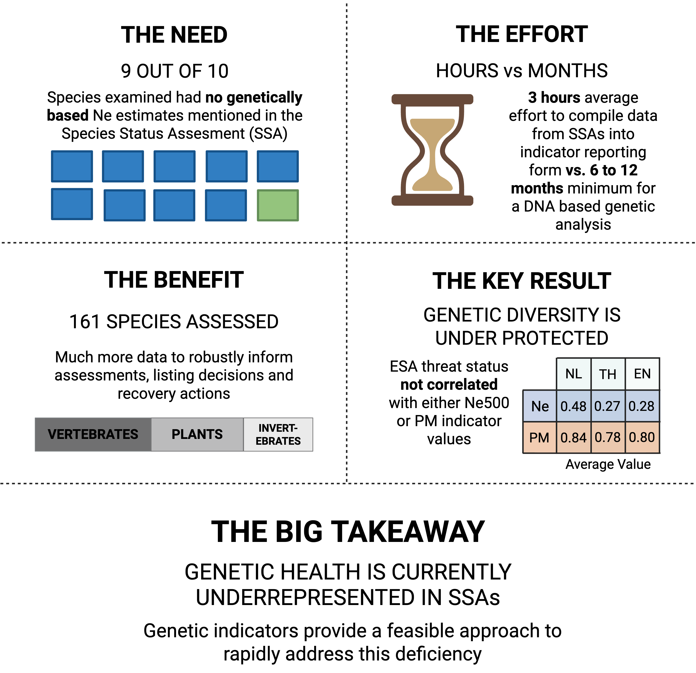

Illustration and Visual Communication
Alongside my research, I am interested in scientific illustration, figure design, and nature journaling as ways of observing and communicating ecological ideas. My work includes both published figures created in support of scientific projects and independent creative work centered on birds, landscapes, and natural history.
Published Works
A widespread gap in U.S. Endangered Species Act implementation: Risk of genetic erosion within populations
We apply indicators of intraspecific genetic diversity as adopted by the Convention on Biological Diversity to 161 species assessed for classification under the U.S. Endangered Species Act (ESA). In addition to contributions to data analysis and writing, I illustrated all animals and developed all figures for this paper.
View Publication
Figure 1. Genetic indicators by ESA classification status and taxonomic group.

Figure 2. Summary of the need, effort, benefit, key results, and takeaway of evaluating the 459 genetic indicators in at-risk species assessed under the ESA using the SSA framework.
A widespread gap in U.S. Endangered Species Act implementation: Risk of genetic erosion within populations
We apply indicators of intraspecific genetic diversity as adopted by the Convention on Biological Diversity to 161 species assessed for classification under the U.S. Endangered Species Act (ESA). In addition to contributions to data analysis and writing, I illustrated all animals and developed all figures for this paper.
View Publication
Figure 1. Genetic indicators by ESA classification status and taxonomic group.
Portfolio
A selection of independent creative work, including nature journaling, observational sketches, and other illustrations inspired by birds, ecology, and the natural world.